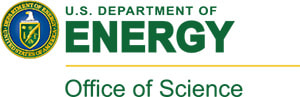
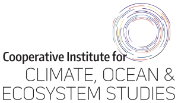
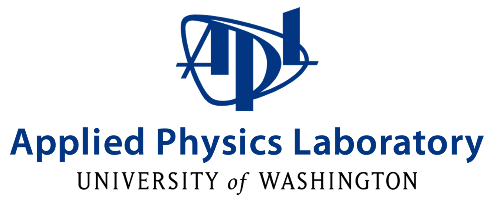

| Home | Registration | Agenda | Logistics | Flyer |
The Consortium for the Advancement of Marine Arctic Science (CAMAS) was established in 2023 to facilitate and enhance international collaboration on marine Arctic science. It has been motivated in part by the demonstrated need for, and accomplishments of, similar past efforts, i.e., the Forum for Arctic Ocean Modeling and Observational Synthesis (FAMOS) and the Arctic Ocean Model Intercomparison Project (AOMIP). The overall aim of CAMAS is to advance the understanding and model representation of key marine Arctic processes that contribute to the rapid changes in the Arctic. In particular, CAMAS will focus on the following themes:
CAMAS consist of three annual workshops to initiate, execute, and finalize coordinated activities that will advance our understanding of these topics through multi-model analysis, model-observational synthesis, and the development and evaluation of process-oriented metrics. Each workshop will be preceded by an Early-Career School. The school will consist of lectures and activities on hot topics in the field, with ample discussion and social time. Some funding is available to support travel costs for early-career scientists.
The first CAMAS Workshop and Early-Career School took place successfully in February 2024 in Santa Fe, NM. The event convened 80 Arctic marine scientists from around the globe, fostering discussions on current research and sparking ideas for collaborative projects over the next three years of CAMAS. A detailed workshop report is available in this article published in BAMS.
The second CAMAS Workshop and Early-Career School is planned for April 15–18, 2025, at the Center for Urban Horticulture in Seattle, Washington. The EC School will be on April 15 (in-person only), followed by the 2.5-day workshop. We encourage in-person participation for the most productive discussions and interactions. Options will be provided to join the workshop remotely, although some program elements will be in-person only.
We strongly encourage all participants to submit an abstract during the registration process. Most abstracts will be assigned a poster. We will select a few abstracts for oral presentations. Early-career scientists can submit a brief description of their interests if no abstract is available. Remote participants will have the opportunity to submit a presentation of their choice (poster, slide deck, recording) that will be made available through a link on the online meeting agenda. They will be given an opportunity for a 3-minute flash talk during the workshop.
Questions or Ideas? Contact Us!
CAMAS is organized as part of the HiLAT-RASM project, and sponsored by Department of Energy’s Regional and Global Model Analysis (RGMA) program. The 2025 event is also sponsored by Cooperative Institute for Climate, Ocean, & Ecosystem Studies (CICOES) and Applied Physices Laborotory (APL) at the University of Washington.
|  |  |  |